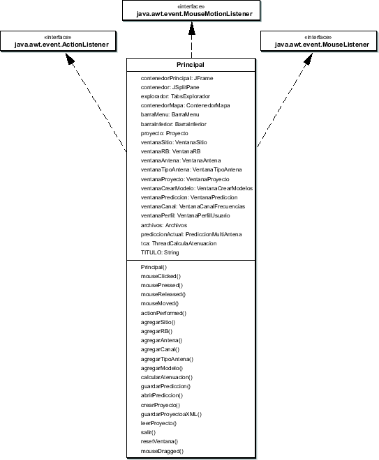

Siguiente: El paquete proyecto
Subir: Arquitectura de paquetes
Anterior: Arquitectura de paquetes
Índice General
Es el que controla el flujo de ejecución del programa. La clase
homónima (Principal) (ver diagrama de la figura
8.2) se encarga de comandar todas las acciones que se
ejecutan, interactuando con las diferentes entidades que lo
componen. Principalmente media entre la interfaz de usuario (el
explorador, el mapa, las diferentes ventanas y menúes, etc.) y el
proyecto, haciendo posible que las acciones tomadas por el usuario
se reflejen en la interfaz y la información se procese en el
proyecto. Como es la única instancia que conoce todos los agentes
debe encargarse de mantener la coherencia entre ellos. Por ejemplo,
si se borra un sitio desde el explorador, la clase Principal es
notificada de dicha acción y propaga la información al proyecto y al
mapa, de forma que ellos también lo puedan eliminar.
Figura 8.2:
Diagrama parcial de la clase Principal
|

|
SAPO